X5¶
NINE-POINT CENTER
nine_point_center(A, B, C) -> X_5 • Poncelet–Brianchon–Feuerbach (1822) • Kimberling X(5) • Search Value \((6, 9, 13)\): \(\frac{157 \sqrt{35}}{1680} \approx 0.552871741635\)
X5 (NINE-POINT CENTER) constructed at X5 = \(\left(6,\; \frac{63}{16}\right)\) in exact rational coordinates on the Heronian reference triangle \((a, b, c) = (15, 13, 14)\) over \(\mathbb{Q}\) with vertices A = \((0, 0)\), B = \((14, 0)\), C = \((5, 12)\), and area \(\Delta = 84\), and nine-point circle radius \(R_9 = \frac{65}{16}\). Switch tabs above to inspect exact constructions on Right \((3, 4, 5)\), Kepler \((1, \sqrt{\phi}, \phi)\), and Kimberling \((6, 9, 13)\).¶
Constructed Elements
Derived Triangle: Medial Triangle △MaMbMc — vertices Ma, Mb, Mc (Formed by the midpoints of sides BC, CA, AB)
Auxiliary Points: Ha, Hb, Hc — Altitude feet on BC, CA, AB
Auxiliary Points: Eua, Eub, Euc — Euler midpoints halfway between A, B, C and the orthocenter
Circle: Nine-Point Circle (ninepointcircle) — Passes through side midpoints M_a, M_b, M_c and altitude feet H_a, H_b, H_c; centered at X5
Homogeneous Coordinates & Exact Invariants¶

Homogeneous Coordinates of X5 on Heronian \((15, 13, 14)\): orthogonal trilinear struts \((\alpha, \beta, \gamma)\) and signed barycentric sub-triangles \((\Delta_a, \Delta_b, \Delta_c)\).¶
Trilinear Coordinates (\(\alpha : \beta : \gamma = 4199 : 4185 : 4095\)): Dropping orthogonal perpendiculars X5Ta, X5Tb, and X5Tc from X5 to sidelines BC, CA, and AB meets the sides at right-spread pedal feet Ta = \(\left(\frac{923}{100},\; \frac{159}{25}\right)\), Tb = \(\left(\frac{1545}{676},\; \frac{927}{169}\right)\), and Tc = \(\left(6,\; 0\right)\). The orthogonal strut lengths are \(\left(\frac{323}{80},\; \frac{837}{208},\; \frac{63}{16}\right)\), realizing \(\alpha : \beta : \gamma = 4199 : 4185 : 4095\), while nine-point circle has exact radius \(R_9 = \frac{65}{16}\) (quadrance \(Q_9 = \frac{4225}{256}\)).
Barycentric Coordinates (\(u : v : w = 323 : 279 : 294\)): Joining X5 to the vertices along X5A, X5B, and X5C forms signed sub-triangles △X5BC, △X5CA, and △X5AB of exact signed areas \(\Delta_a = \frac{969}{32}\), \(\Delta_b = \frac{837}{32}\), and \(\Delta_c = \frac{441}{16}\) (summing to \(\Delta_a + \Delta_b + \Delta_c = 84 = \Delta\)), in homogeneous ratio \(u : v : w = 323 : 279 : 294\).
Reference Triangle |
Field |
Cartesian \((x, y)\) |
Trilinears \(\alpha : \beta : \gamma\) |
Barycentrics \(u : v : w\) |
Sub-Areas \((\Delta_a, \Delta_b, \Delta_c)\) |
Nine-Point Radius \((R_9,\, Q_9)\) |
|---|---|---|---|---|---|---|
Heronian \((15, 13, 14)\) |
\(\mathbb{Q}\) |
\(\left(6,\; \frac{63}{16}\right)\) |
\(4199 : 4185 : 4095\) |
\(323 : 279 : 294\) |
\(\left(\frac{969}{32},\; \frac{837}{32},\; \frac{441}{16}\right)\) |
\(R_9 = \frac{65}{16},\; Q_9 = \frac{4225}{256}\) |
Right \((3, 4, 5)\) |
\(\mathbb{Q}\) |
\(\left(\frac{57}{20},\; \frac{6}{5}\right)\) |
\(20 : 15 : 24\) |
\(1 : 1 : 2\) |
\(\left(\frac{3}{2},\; \frac{3}{2},\; 3\right)\) |
\(R_9 = \frac{5}{4},\; Q_9 = \frac{25}{16}\) |
Kepler \((1, \sqrt{\phi}, \phi)\) |
\(\mathbb{Q}(\sqrt{\phi})\) |
\(\left(\frac{\phi}{4} + \frac{1}{2},\; \frac{\sqrt{\phi} \left(\phi - 1\right)}{2}\right)\) |
\(1 : \sqrt{\phi} \left(\phi - 1\right) : 2 \phi - 2\) |
\(1 : 1 : 2\) |
\(\left(\frac{\sqrt{\phi}}{8},\; \frac{\sqrt{\phi}}{8},\; \frac{\sqrt{\phi}}{4}\right)\) |
\(R_9 = \frac{\phi}{4},\; Q_9 = \frac{\phi}{16} + \frac{1}{16}\) |
Kimberling \((6, 9, 13)\) |
\(\mathbb{Q}(\sqrt{35})\) |
\(\left(\frac{383}{52},\; \frac{4437 \sqrt{35}}{7280}\right)\) |
\(6123 : -3523 : 39933\) |
\(314 : -271 : 4437\) |
\(\left(\frac{157 \sqrt{35}}{560},\; - \frac{271 \sqrt{35}}{1120},\; \frac{4437 \sqrt{35}}{1120}\right)\) |
\(R_9 = \frac{351 \sqrt{35}}{560},\; Q_9 = \frac{123201}{8960}\) |
Alternate Coordinates11 forms
Trilinears: \(\cos A + 2 \cos B \cos C : :\)
Trilinears: \(\cos A - 2 \sin B \sin C\)
Trilinears: \(bc[a^{2}(b^{2} + c^{2}) - (b^{2} - c^{2})^{2}] : :\)
Trilinears: \(2 \sec A + \sec B \sec C : :\)
Trilinears: \(\cos B \cos C + \sin B \sin C : :\)
Trilinears: \(\cos^{2}(B/2 - C/2) - \sin^{2}(B/2 - C/2) : :\)
Trilinears: \(\cos A' : :\), where
A'is the angle formed by internal tangents to incircle and A-excircleTrilinears: \(\cos A'' : :\), where
A″is the angle formed by external tangents to B- and C-excirclesBarycentrics: \(a^{2}(b^{2} + c^{2}) - (b^{2} - c^{2})^{2}\)
Barycentrics: \(S^{2} + S_{B} S_{C} : :\)
Barycentrics: \(1 + \cot B \cot C : :\)
Incident Central Lines¶
Principal Central Lines Through X5 on Heronian \((15, 13, 14)\).¶
Euler Line {2, 3, 4, 5} — collinear axis through X2 (Centroid, \(\left(\frac{19}{3},\; 4\right)\)), X3 (Circumcenter, \(\left(7,\; \frac{33}{8}\right)\)), X4 (Orthocenter, \(\left(5,\; \frac{15}{4}\right)\)), X5, with exact Cartesian equation \(3 x - 16 y + 45 = 0\) (spread \(\frac{9}{265}\) relative to AB).
Feuerbach Line {1, 5, 11, 12} — collinear axis through X1 (Incenter, \(\left(6,\; 4\right)\)), X5, X11 (Feuerbach Point, \(\left(6,\; 8\right)\)), X12 ({X, \(\left(6,\; \frac{512}{129}\right)\)), with exact Cartesian equation \(x - 6 = 0\) (spread \(1\), perpendicular to baseline AB).
Brocard Midpoint–Center Of Kiepert Hyperbola Central Line {5, 39, 115} — collinear axis through X5, X39 (Brocard Midpoint, \(\left(\frac{691103}{115249},\; \frac{463344}{115249}\right)\)), X115 (Center Of Kiepert Hyperbola, \(\left(\frac{13727}{2353},\; \frac{18816}{2353}\right)\)), with exact Cartesian equation \(152817 x + 6256 y - 941535 = 0\) (spread \(\frac{23353035489}{23392173025}\) relative to AB).
Kosnita Point–Focus Of Kiepert Parabola Central Line {5, 54, 110} — collinear axis through X5, X54 (Kosnita Point, \(\left(\frac{33269}{5545},\; \frac{90117}{22180}\right)\)), X110 (Focus Of Kiepert Parabola, \(\left(\frac{1593}{265},\; - \frac{1044}{265}\right)\)), with exact Cartesian equation \(11133 x + 16 y - 66861 = 0\) (spread \(\frac{123943689}{123943945}\) relative to AB).
X5 lies on the Napoleon cubic (also known as the Feuerbach cubic).
Full Incident Central Line Catalog718 lines
{1, 11}, {2, 3}, {6, 68}, {7, 5704}, {8, 1389}, {9, 1729}, {10, 517}, {13, 18}, {14, 17}, {15, 2913}, {16, 2912}, {19, 8141}, {32, 230}, {33, 1062}, {34, 1060}, {35, 3583}, {36, 3585}, {39, 114}, {40, 1698}, {46, 1836}, {47, 5348}, {49, 54}, {51, 52}, {53, 216}, {55, 498}, {56, 499}, {57, 1728}, {60, 5397}, {64, 4846}, {65, 1737}, {67, 9970}, {69, 1351}, {72, 908}, {74, 3521}, {76, 262}, {78, 3419}, {79, 1749}, {83, 98}, {84, 5437}, {85, 1565}, {93, 6344}, {94, 9221}, {96, 1166}, {97, 4994}, {99, 5966}, {100, 10738}, {101, 10739}, {102, 10740}, {103, 10741}, {104, 5253}, {105, 10743}, {106, 10744}, {107, 10745}, {108, 10746}, {109, 10747}, {111, 10748}, {112, 10749}, {113, 125}, {116, 118}, {117, 124}, {120, 5511}, {121, 2885}, {122, 133}, {126, 5512}, {127, 132}, {128, 137}, {129, 130}, {131, 136}, {141, 211}, {142, 971}, {145, 10247}, {146, 10620}, {147, 3329}, {148, 7783}, {149, 3871}, {153, 12773}, {154, 9833}, {156, 184}, {165, 7965}, {169, 6506}, {171, 3073}, {181, 10407}, {182, 206}, {183, 315}, {187, 3054}, {191, 5535}, {193, 5093}, {194, 7777}, {195, 1994}, {214, 6246}, {217, 1625}, {222, 8757}, {225, 1465}, {226, 912}, {236, 8130}, {238, 3072}, {252, 1157}, {264, 1093}, {273, 6356}, {275, 2055}, {276, 6528}, {298, 634}, {299, 633}, {302, 622}, {303, 621}, {311, 1225}, {312, 3695}, {316, 1078}, {318, 2968}, {324, 6663}, {329, 2095}, {339, 1235}, {354, 13407}, {356, 3608}, {371, 590}, {372, 615}, {385, 7762}, {386, 1834}, {388, 999}, {389, 5448}, {390, 7678}, {392, 1512}, {394, 10982}, {399, 3448}, {484, 5445}, {487, 12313}, {488, 12314}, {491, 637}, {492, 638}, {493, 8220}, {494, 8221}, {497, 3085}, {515, 1125}, {516, 3579}, {518, 10916}, {519, 3813}, {523, 6757}, {524, 576}, {528, 8715}, {529, 8666}, {538, 7764}, {539, 1493}, {542, 575}, {543, 9771}, {551, 5882}, {566, 9220}, {568, 3567}, {570, 1879}, {572, 2126}, {573, 1213}, {574, 3055}, {577, 6748}, {578, 1147}, {579, 1901}, {580, 5127}, {581, 5453}, {582, 1754}, {583, 8818}, {598, 7607}, {599, 11477}, {601, 750}, {602, 748}, {611, 12589}, {613, 12588}, {616, 13103}, {617, 13102}, {618, 629}, {619, 630}, {620, 6721}, {641, 6250}, {642, 6251}, {671, 7608}, {698, 8149}, {754, 7780}, {758, 5694}, {804, 11615}, {842, 1287}, {920, 1454}, {925, 2383}, {930, 6592}, {938, 3487}, {944, 3616}, {950, 13411}, {956, 3436}, {958, 10526}, {962, 5657}, {986, 3944}, {993, 4999}, {997, 5794}, {1001, 10198}, {1007, 3926}, {1056, 5261}, {1058, 5274}, {1069, 10055}, {1071, 5249}, {1073, 1217}, {1087, 2599}, {1089, 3703}, {1090, 1091}, {1092, 5651}, {1111, 3665}, {1112, 12358}, {1117, 3470}, {1131, 3317}, {1132, 3316}, {1139, 3393}, {1140, 3370}, {1145, 7704}, {1151, 5418}, {1152, 5420}, {1155, 1770}, {1158, 5880}, {1160, 5590}, {1161, 5591}, {1173, 1487}, {1181, 1899}, {1199, 3410}, {1211, 5752}, {1212, 5179}, {1214, 1838}, {1249, 8888}, {1270, 11917}, {1271, 11916}, {1297, 12918}, {1327, 6426}, {1328, 6425}, {1350, 3763}, {1376, 10525}, {1393, 7069}, {1420, 9613}, {1441, 3007}, {1447, 4911}, {1490, 5787}, {1495, 11572}, {1498, 1853}, {1499, 11182}, {1511, 5972}, {1519, 3753}, {1537, 7705}, {1538, 8582}, {1539, 2777}, {1587, 3069}, {1588, 3068}, {1601, 3432}, {1614, 5012}, {1621, 11491}, {1697, 9614}, {1706, 12700}, {1709, 12679}, {1714, 4383}, {1724, 5398}, {1750, 8726}, {1768, 7701}, {1788, 4295}, {1843, 9967}, {1848, 1871}, {1861, 1872}, {1916, 3399}, {1935, 3075}, {1936, 3074}, {1975, 6390}, {1986, 7723}, {1990, 5158}, {1992, 11482}, {2052, 13599}, {2066, 9646}, {2067, 9661}, {2077, 11826}, {2086, 9490}, {2098, 12647}, {2099, 10573}, {2120, 2121}, {2241, 9665}, {2242, 9650}, {2482, 9880}, {2486, 2783}, {2549, 5013}, {2550, 9709}, {2551, 9708}, {2595, 3460}, {2601, 2602}, {2607, 2957}, {2635, 4303}, {2646, 10572}, {2682, 10568}, {2771, 5883}, {2781, 6698}, {2792, 4672}, {2794, 6036}, {2797, 8552}, {2800, 3754}, {2801, 12005}, {2802, 10284}, {2826, 3837}, {2829, 5450}, {2883, 5892}, {2887, 3831}, {2896, 7616}, {2963, 2965}, {2971, 2974}, {2975, 5080}, {2979, 7999}, {3006, 3701}, {3035, 5840}, {3053, 7737}, {3057, 10039}, {3058, 3584}, {3060, 6243}, {3096, 7934}, {3098, 7914}, {3120, 5492}, {3157, 10071}, {3167, 6193}, {3258, 11749}, {3272, 3609}, {3284, 6749}, {3303, 10056}, {3304, 10072}, {3306, 13226}, {3314, 7912}, {3333, 5290}, {3338, 10404}, {3357, 5893}, {3359, 12705}, {3368, 5401}, {3381, 3382}, {3406, 3407}, {3434, 5552}, {3462, 3463}, {3468, 3469}, {3488, 5703}, {3576, 3624}, {3581, 10545}, {3582, 5270}, {3586, 3601}, {3617, 8148}, {3618, 5050}, {3619, 10519}, {3622, 7967}, {3626, 11278}, {3629, 5097}, {3630, 7882}, {3631, 7896}, {3636, 13607}, {3649, 5693}, {3654, 7991}, {3656, 3679}, {3670, 3782}, {3673, 7179}, {3687, 5295}, {3705, 4385}, {3734, 3788}, {3737, 8819}, {3739, 12490}, {3742, 12675}, {3785, 9752}, {3812, 3838}, {3819, 5447}, {3823, 12393}, {3833, 6701}, {3867, 11574}, {3874, 6583}, {3880, 10915}, {3911, 4292}, {3913, 11235}, {3917, 10625}, {3931, 5530}, {3947, 5045}, {3972, 7857}, {4004, 10273}, {4030, 4894}, {4045, 6683}, {4293, 5229}, {4294, 5218}, {4297, 10165}, {4299, 5204}, {4302, 5217}, {4311, 5126}, {4323, 11041}, {4354, 9629}, {4413, 10310}, {4417, 10449}, {4420, 5178}, {4425, 9959}, {4511, 5086}, {4550, 7689}, {4662, 12612}, {4668, 11224}, {4855, 9945}, {4861, 5176}, {4885, 8760}, {5007, 5306}, {5010, 5326}, {5015, 7081}, {5024, 7738}, {5038, 11646}, {5041, 5355}, {5082, 7080}, {5092, 6704}, {5099, 13162}, {5119, 12701}, {5131, 5442}, {5171, 7761}, {5181, 8263}, {5188, 6249}, {5221, 11544}, {5223, 6067}, {5224, 10446}, {5233, 9534}, {5237, 5350}, {5238, 5349}, {5248, 5842}, {5251, 11012}, {5257, 10445}, {5259, 6253}, {5286, 7736}, {5309, 7772}, {5334, 11485}, {5335, 11486}, {5339, 10654}, {5340, 10653}, {5354, 10339}, {5395, 7612}, {5412, 10897}, {5413, 10898}, {5422, 7592}, {5471, 6783}, {5472, 6782}, {5544, 5656}, {5550, 5731}, {5597, 8200}, {5598, 8207}, {5599, 8196}, {5600, 8203}, {5601, 11875}, {5602, 11876}, {5643, 5655}, {5658, 9799}, {5745, 12572}, {5814, 11679}, {5890, 11451}, {5895, 10606}, {5908, 5909}, {5913, 6032}, {5925, 8567}, {5944, 6689}, {5947, 5948}, {5950, 5952}, {5961, 8146}, {5962, 13557}, {6043, 11992}, {6054, 7827}, {6055, 10991}, {6118, 8180}, {6119, 8184}, {6130, 9517}, {6150, 10615}, {6152, 12606}, {6153, 11692}, {6174, 10993}, {6179, 7812}, {6191, 7345}, {6192, 7344}, {6194, 7938}, {6221, 6459}, {6223, 12684}, {6224, 12747}, {6225, 13093}, {6237, 11435}, {6238, 11436}, {6241, 10574}, {6256, 10200}, {6291, 12603}, {6329, 12007}, {6361, 9812}, {6398, 6460}, {6406, 12604}, {6407, 9692}, {6417, 7582}, {6418, 7581}, {6419, 8960}, {6433, 12819}, {6434, 12818}, {6449, 9541}, {6462, 11949}, {6463, 11950}, {6515, 9777}, {6523, 10002}, {6599, 12660}, {6662, 13409}, {6669, 6694}, {6670, 6695}, {6671, 6673}, {6672, 6674}, {6692, 6705}, {6703, 13323}, {6735, 10914}, {6736, 13600}, {6769, 8580}, {7013, 10400}, {7028, 8129}, {7160, 12856}, {7198, 7272}, {7280, 7294}, {7596, 8228}, {7615, 11184}, {7620, 11165}, {7691, 11016}, {7693, 12307}, {7694, 9756}, {7703, 11439}, {7709, 7864}, {7743, 9957}, {7754, 7774}, {7758, 9766}, {7760, 7858}, {7766, 7921}, {7768, 7809}, {7771, 7802}, {7778, 7795}, {7779, 7941}, {7784, 7800}, {7786, 7790}, {7787, 7806}, {7793, 7823}, {7794, 7821}, {7801, 7888}, {7803, 7851}, {7810, 7873}, {7811, 7860}, {7818, 7854}, {7820, 7874}, {7822, 7867}, {7826, 7845}, {7830, 7842}, {7831, 7911}, {7832, 7899}, {7835, 7940}, {7836, 7925}, {7846, 7942}, {7852, 7889}, {7855, 7903}, {7856, 7878}, {7859, 7919}, {7875, 7932}, {7877, 7926}, {7893, 7900}, {7898, 7904}, {7935, 8722}, {7998, 13340}, {8014, 11555}, {8015, 11556}, {8069, 10320}, {8085, 8087}, {8086, 8088}, {8121, 8123}, {8122, 8124}, {8158, 8165}, {8212, 8222}, {8213, 8223}, {8280, 8855}, {8281, 8854}, {8351, 8379}, {8377, 8380}, {8378, 8381}, {8538, 8541}, {8591, 12355}, {8725, 9751}, {8798, 13157}, {8800, 8905}, {8909, 8966}, {8918, 10218}, {8919, 10217}, {8929, 11581}, {8930, 11582}, {8961, 8963}, {8985, 8990}, {9159, 11639}, {9172, 10162}, {9512, 11061}, {9535, 9566}, {9538, 9642}, {9539, 9641}, {9542, 9691}, {9543, 9690}, {9544, 9704}, {9545, 9703}, {9782, 9809}, {9786, 9815}, {9862, 10583}, {9874, 12872}, {9919, 13203}, {9964, 12528}, {10037, 10832}, {10038, 10874}, {10040, 10925}, {10041, 10926}, {10046, 10831}, {10047, 10873}, {10048, 10923}, {10049, 10924}, {10053, 12185}, {10054, 12351}, {10058, 12764}, {10059, 12860}, {10060, 12950}, {10061, 12951}, {10062, 12952}, {10063, 12836}, {10064, 12954}, {10065, 12374}, {10066, 12956}, {10067, 12958}, {10068, 12959}, {10069, 12184}, {10070, 12350}, {10074, 12763}, {10075, 12859}, {10076, 12940}, {10077, 12941}, {10078, 12942}, {10079, 12837}, {10080, 12944}, {10081, 12373}, {10082, 12946}, {10083, 12948}, {10084, 12949}, {10085, 12678}, {10086, 13183}, {10087, 13274}, {10088, 12904}, {10089, 13182}, {10090, 13273}, {10091, 12903}, {10168, 11645}, {10187, 12816}, {10188, 12817}, {10266, 12919}, {10278, 10279}, {10311, 10316}, {10312, 10317}, {10524, 10530}, {10528, 10596}, {10529, 10597}, {10546, 11464}, {10575, 11381}, {10584, 10785}, {10585, 10786}, {10586, 10805}, {10587, 10806}, {10628, 11557}, {10634, 10641}, {10635, 10642}, {10733, 12121}, {10797, 10802}, {10798, 10801}, {10984, 11550}, {11236, 12513}, {11264, 13366}, {11392, 11399}, {11393, 11398}, {11411, 11431}, {11425, 12118}, {11429, 12428}, {11449, 12278}, {11455, 12279}, {11456, 11457}, {11501, 11508}, {11502, 11507}, {11536, 12234}, {11576, 12363}, {11649, 12061}, {11671, 13512}, {11746, 12236}, {11754, 11755}, {11763, 11764}, {11772, 11773}, {11781, 11782}, {11869, 11879}, {11870, 11880}, {11871, 11877}, {11872, 11878}, {11905, 11913}, {11906, 11912}, {11930, 11953}, {11931, 11954}, {11932, 11951}, {11933, 11952}, {12099, 12827}, {12308, 12317}, {12309, 12318}, {12310, 12319}, {12311, 12320}, {12312, 12321}, {12316, 12325}, {12383, 12902}, {12384, 13115}, {12494, 13234}, {12599, 12864}, {12600, 13089}, {12613, 12621}, {12614, 12622}, {12615, 12623}, {12624, 13249}, {12849, 13126}, {12945, 13117}, {12947, 13129}, {12955, 13116}, {12957, 13128}, {13023, 13025}, {13024, 13026}, {13039, 13051}, {13040, 13052}, {13219, 13310}, {13296, 13312}, {13297, 13311}, {13348, 13570}, {13507, 13508}
Functional Relations & Conjugates¶
Conjugate & Homothetic Partners of X5 on Heronian \((15, 13, 14)\).¶
Isogonal Conjugate: X54 (Kosnita Point, homogeneous barycentrics \(62775 : 54587 : 60078\)) at \(\left(\frac{33269}{5545},\; \frac{90117}{22180}\right)\), joined along {5, 54} (isogonal conjugate via \(a^2 vw : b^2 wu : c^2 uv\)).
Isotomic Conjugate: X95 (Cevapoint Of Centroid And Circumcenter, homogeneous barycentrics \(27342 : 31654 : 30039\)) at \(\left(\frac{593351}{89035},\; \frac{360468}{89035}\right)\), joined along {5, 95} (isotomic conjugate via \(vw : wu : uv\)).
Complement: X140 (Midpoint Of X3 And X5) at \(\left(\frac{13}{2},\; \frac{129}{32}\right)\), joined along {5, 140} — complement of X5 dilated from X2 by factor \(-\frac{1}{2}\).
Anticomplement: X3 (Circumcenter) at \(\left(7,\; \frac{33}{8}\right)\), joined along {3, 5} — anticomplement of X5 dilated from X2 by factor \(-2\).
Circumcircle Inverse: Inversion in circumcircle centered at X3 = \(\left(7, \frac{33}{8}\right)\) (\(Q_R = \frac{4225}{64}\)) maps X5 along {3, 5} (\(Q(X5, X3) = \frac{265}{256}\), scale \(Q_R / Q = \frac{3380}{53}\)) to exact algebraic point at \(\left(- \frac{3009}{53},\; - \frac{3321}{424}\right)\) (homogeneous barycentrics \(129995 : -90753 : -15498\)) .
Full Functional Relations Catalog72 relations
X5 = midpoint of Xi and Xj for these (i,j): (1, 355), (2, 381), (3, 4), (11, 119), (20, 382), (68, 155), (110, 265), (113, 125), (114, 115), (116, 118), (117, 124), (122, 133), (127, 132), (128, 137), (129, 130), (131, 136), (399, 3448)
X5 = reflection of Xi in Xj for these (i,j): (2, 547), (3, 140), (4, 546), (20, 548), (52, 143), (549, 2), (550, 3), (1263, 137), (1353, 6), (1385, 1125), (1483, 1), (1484, 11)
X5 = isogonal conjugate of X54
X5 = isotomic conjugate of X95
X5 = de-Longchamps-circle-inverse of anticomplement of X37943
X5 = circle-O(PU(4))-inverse of X37969
X5 = complement of X3
X5 = complementary conjugate of X3
X5 = eigencenter of anticevian triangle of X523
X5 = Xi-Ceva conjugate of Xj for these (i,j): (2, 216), (4, 52), (110, 523), (264, 324), (265, 30), (311, 343), (324, 53)
X5 = cevapoint of Xi and Xj for these (i,j): (3, 195), (51, 216)
X5 = Xi-cross conjugate of Xj for these (i,j): (51, 53), (54, 2121), (216, 343), (233, 2)
X5 = crosspoint of Xi and Xj for these (i,j): (2, 264), (311, 324)
X5 = crosssum of Xi and Xj for these (i,j): (3, 1147), (6, 184)
X5 = crossdifference of every pair of points on line X50X647
X5 = X1-aleph conjugate of X1048
X5 = radical center of Stammler circles
X5 = center of inverse-in-circumcircle-of-tangential-circle
X5 = harmonic center of 1st & 2nd Hutson circles
X5 = homothetic center of circumorthic triangle and 2nd isogonal triangle of X4; see X36
X5 = X5-of-complement-of-excentral-triangle (or extraversion triangle of X10)
X5 = bicentric sum of PU(i) for these i: 5, 7, 38, 65, 173
X5 = midpoint of PU(i) for these i: 5, 7, 38
X5 = trilinear product of PU(69)
X5 = center of circumconic that is locus of trilinear poles of lines passing through X216
X5 = pole wrt polar circle of trilinear polar of X275 (line X186X523)
X5 = X48-isoconjugate (polar conjugate) of X275
X5 = homothetic center of medial triangle and Euler triangle
X5 = homothetic center of ABC and the triangle obtained by reflecting X3 in the points A, B, C
X5 = radical center of the Stammler circles
X5 = antigonal image of X1263
X5 = crosspoint of X627 and X628 wrt both the excentral and anticomplementary triangles
X5 = inverse-in-{circumcircle, nine-point circle}-inverter of X23
X5 = perspector of medial triangles of ABC, orthic and half-altitude triangles
X5 = Thomson-isogonal conjugate of X6030
X5 = harmonic center of circumcircles of Euler and anti-Euler triangles
X5 = perspector of Feuerbach triangle and cross-triangle of ABC and Feuerbach triangle
X5 = homothetic center of Ehrmann vertex-triangle and Kosnita triangle
X5 = homothetic center of Ehrmann side-triangle and circumorthic triangle
X5 = perspector of Ehrmann mid-triangle and submedial triangle
X5 = Ehrmann-side-to-orthic similarity image of X4
X5 = excentral-to-ABC functional image of X3
X5 =
QA-P32 center (Centroid of the Circumcenter Quadrangle) of quadrangle ABCX4 (see http://www.chrisvantienhoven.nl/quadrangle-objects/15-mathematics/quadrangle-objects/artikelen-qa/60-qa-p32.html)
Four-Triangle Symbolic Invariance¶

Four-Triangle Invariance of X5 across Heronian (15, 13, 14), Right (3, 4, 5), Kepler (1, √φ, φ), and Kimberling (6, 9, 13).¶
Across the four canonical algebraic number fields — Heronian (15, 13, 14) over \(\mathbb{Q}\) (\(X5 = \left(6,\; \frac{63}{16}\right)\), R9 = \(\frac{65}{16}\)), Right (3, 4, 5) over \(\mathbb{Q}\) (\(X5 = \left(\frac{57}{20},\; \frac{6}{5}\right)\), R9 = \(\frac{5}{4}\)), Kepler (1, √φ, φ) over \(\mathbb{Q}(\sqrt{\phi})\), R9 = \(\frac{\phi}{4}\), and Kimberling (6, 9, 13) over \(\mathbb{Q}(\sqrt{35})\) (\(X5 = \left(\frac{383}{52},\; \frac{4437 \sqrt{35}}{7280}\right)\), R9 = \(\frac{351 \sqrt{35}}{560}\)) — X5 lies strictly interior on Heronian, Right, Kepler while crossing outside \(\triangle ABC\) on Kimberling (where signed sub-areas change sign across the sidelines while still summing algebraically to \(\Delta\)).
Related Collection 1 Topic Guides
T_3: Complement & Anticomplement • T_4: Harmonic Conjugate & Cross-Ratio • T_6: The Euler Line • T_9: The Feuerbach Line • T_15: The Circumcircle • T_16: The Nine-Point (Feuerbach) Circle • T_19: The Brocard & Orthocentroidal Circles • T_20: Medial & Anticomplementary Triangles • T_21: Orthic & Tangential Triangles
Notes¶
As a point on the Euler line, X5 has Shinagawa coefficients \((1, 1)\).
Dan Pedoe, Circles: A Mathematical View, Mathematical Association of America, 1995.
Let P_a be the parabola with focus A and directrix BC. Let L_a be the polar of X3 wrt P_a. Define L_b and L_c cyclically. Let A' = L_b∩L_c, and define B' and C; cyclically. Then X5 = X597-of-A'B'C'. (Randy Hutson, December 10, 2016)
Let A'B'C' be the half-altitude triangle. Let A″ be the trilinear pole, wrt A'B'C', of line BC, and define B″ and C″ cyclically. The lines A’″, B'B″, C'C″ concur in X5. (Randy Hutson, December 10, 2016)
Let A' be the nine-point center of BCX13, and define B' and C' cyclically. Let A″ be the nine-point center of BCX14, and define B″ and C″ cyclically. The lines A’″, B'B″, C'C″ concur in X5. (Randy Hutson, December 10, 2016)
Let Eu_aEu_bEu_c be the Euler triangle. Let A″ be the centroid of AEu_bEu_c, and define B″ and C″ cyclically. The lines A’″, Eu_bB″, Eu_cC″ concur in X5. (Randy Hutson, December 10, 2016)
Let A'B'C' be any equilateral triangle inscribed in the circumcircle of ABC. The Simson lines of A', B', C' form an equilateral triangle with center X5. If A'B'C' is the circumtangential triangle, the Simson lines of A', B', C' concur in X5. (Randy Hutson, December 10, 2016) Let O_A be the circle centered at the A-vertex of the Steiner triangle and passing through A; define O_B and O_C cyclically. X5 is the radical center of O_A, O_B, O_C. (Randy Hutson, August 30, 2020)
Let O_A be the circle centered at the A-vertex of the 1st excosine triangle and passing through A; define O_B and O_C cyclically. X5 is the radical center of O_A, O_B, O_C. (Randy Hutson, August 30, 2020)
Let Eu_aEu_bEu_c be the Feuerbach triangle. Let A″ be the cevapoint of Eub and Euc, and define B″ and C″ cyclically. The lines AA″, BB″, CC″ concur in X5. (Randy Hutson, July 20, 2016)
Let Ref_aRef_bRef_c be the reflection triangle. Let A″ be the trilinear pole of line Ref_bRef_c, and define B″and C″ cyclically. The lines AA″, BB″, CC″ concur in X5. (Randy Hutson, July 20, 2016)
Let A'B'C' be the triangle described in ADGEOM #2697 (8/26/2015, Tran Quang Hung). X5 = X6146-of-A'B'C'.
Let A'B'C' be the cevian triangle of X5. Let A″ be X5-of-AB'C', and define B″, C″ cyclically. The lines AA″, BB″, CC″ concur in X5. (Randy Hutson, June 27, 2018)
Let N_a, N_b, N_c be the nine-point centers of BCF, CAF, ABF, resp., where F = X13. Let N_a', N_b', N_c' be the nine-point centers of BCF', CAF', ABF', resp., where F' = X14. The lines N_aN_a', N_bN_b', N_cN_c' concur in X5. (Randy Hutson, June 27, 2018)
Let N_a, N_b, N_c be the nine-point centers of BCX, CAX, ABX, resp., where X = X17. Let N_a', N_b', N_c' be the nine-point centers of BCX', CAX', ABX', resp., where X' = X18. The lines N_aN_a', N_bN_b', N_cN_c' concur in X5. (Randy Hutson, June 27, 2018)